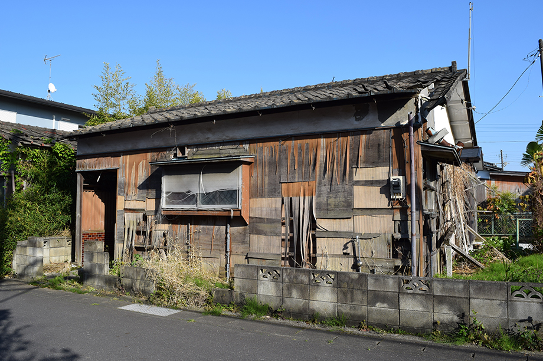

仲介売却・不動産買取
- TOP
- 仲介売却・不動産買取
sell-buy希望価格で売りたい場合は「仲介売却」が最適
不動産を希望価格で売りたい方には「仲介売却」がおすすめです。一般消費者に向けて宣伝活動を行なうため、目安として3ヶ月～6ヶ月の売却期間が必要ですが、市場価格に沿った金額で売却を目指せます。
南口不動産は市川市の仲介売却を得意としています。これまでに得たノウハウから的確な売却戦略を立てられるため、適正価格かつ素早い不動産売却が可能です。訪問査定やお見積もりは無料で承りますので、お気軽にお問い合わせください。
仲介売却は一般消費者から買主様を探す方法
不動産売却の方法を大きく分けると「仲介売却」と「不動産買取」の2種類です。仲介売却は買主様を不動産会社に見つけてもらう売却方法で、多くの売主様が利用するごく一般的な売却方法といえます。
仲介売却のメリットは市場価格に沿った金額で売却できることです。売却開始から売買契約の締結までには平均3ヶ月～6ヶ月の期間がかかり、売却価格に対して3％～5％の仲介手数料も発生しますが、買主様が見つかれば希望価格で売却できます。
不動産売却を成功させるコツは
「戦略」を立てること
不動産を素早く売却できる会社とそうでない会社の違いは「売却戦略の有無」です。買主様が何に注目して不動産を探しているのか、どんなチラシをどのエリアに配布すると効果的なのかなど、的確な戦略を立てなければ希望期間・希望額で不動産売却ができません。
南口不動産は、創業当時から市川市に密着した運営を続けてまいりました。膨大なノウハウを基にした独自の不動産売却戦略に自信があります。担当者がお客様目線で親身にご対応いたしますので、不動産売却をご検討中の方はお気軽に当社へご相談ください。
仲介売却では3種類のうちいずれかの「媒介契約」を結ぶ
仲介売却では、売主様と不動産会社の間で「媒介契約」を結びます。媒介契約には3つの種類があり、メリット・デメリットは以下の表のとおりです。
※表は左右にスクロールして確認することができます。
| メリット | デメリット | |
|---|---|---|
| 一般媒介契約 | 他社とも媒介契約を結んで同時進行できる。自分で見つけた買主様にも売却できるため最も自由度が高く、人気の高い不動産の売却に適している。 | 複数の不動産会社に依頼されるリスクがあるため積極的な宣伝活動には期待できない。レインズ（REINS）への登録義務もなく情報が流通しにくい。 |
| 専任媒介契約 | 不動産会社は7日以内にレインズ（REINS）に登録する義務と、2週間に1度以上の頻度で売主様に活動内容を報告する義務を負う。積極的な宣伝活動に期待できる。 | 売主様・買主様の両方を自社で見つける事にこだわる悪質な不動産会社による「囲い込み」に遭う可能性がある。この場合は素早い売却に期待できず、放置される恐れもある。 |
| 専属専任媒介契約 | 不動産会社は5日以内にレインズ（REINS）に登録する義務と、1週間に1度以上の頻度で売主様に活動内容を報告する義務を負う。より積極的な宣伝活動に期待できる。 | 専任媒介契約と同様に囲い込みのリスクがあるほか、自分で見つけた買主様には売却ができない。家族・親族等に売却する場合も、不動産会社に仲介手数料の支払いが必要になる。 |
仲介売却の基本的な流れは全部で7ステップ
仲介売却の売却フローを7つのステップに分けてご紹介します。
- STEP 01不動産会社への問い合わせ
- 複数の不動産会社を比較して、気になる会社に問い合わせを行います。売却したいエリアに強いか、売却実績が豊富か、さまざまな売却メニューを用意しているかなどを確認して、頼りがいのある不動産会社に相談しましょう。
- STEP 02訪問査定を受ける
- 不動産の査定方法は「簡易査定」と「訪問査定」の2種類です。売り出し価格の決定には訪問査定が必要なため、在宅できる日時に査定を現地調査を依頼しましょう。南口不動産では訪問査定やお見積もりを無料で承ります。
- STEP 03媒介契約を締結する
- 査定価格で合意できた場合は媒介契約を締結します。媒介契約は全部で3種類です。それぞれ特徴が異なるため、不動産会社からメリット・デメリットの説明を受けながら媒介契約の種類を決めましょう。南口不動産は、媒介契約を締結していただいた方に建築士による建物診断を無料でご提供いたします。
- STEP 04宣伝活動を始める
- 不動産流通機構（レインズ）や不動産ポータルサイトを活用したインターネット広告をはじめ、チラシの配布、不動産会社が抱える顧客への営業などを通して宣伝活動を行います。原則として広告費などが売主様に請求されることはありません。
- STEP 05不動産売買契約を締結する
- 購入希望者が見つかった場合は内見を行い、購入申込書を受け取り、買主様との間で条件交渉を行います。条件に合意できた場合は不動産売買契約を締結して売却活動は一区切りです。重要事項説明書などの必要書類は不動産会社が作成します。
- STEP 06引渡しに向けた準備を進める
- 不動産に建物が含まれる場合、家具や家電などを撤去して、空の状態で引き渡すのが基本です。新居で使う物は引越しで移動させ、不要な物はすべて処分しましょう。抵当権の抹消手続きや登記の手配、引越しに向けたインフラの契約・解約などもこのタイミングで行います。
- STEP 07決済完了後に引き渡しを行う
- 事前に取り決めた引渡日に決済を行い、代金が支払われたことを確認してから不動産を引き渡します。建物がある場合は鍵の引き渡しが必要なため、忘れずに持参しましょう。諸費用の清算もここで行い、すべて完了すれば仲介売却は終了です。
便利な「一括査定」に
ひそむ意外な落とし穴とは
最近は一括査定サイトを利用して不動産売却を行う人が増えてきました。便利で分かりやすいと評判の一括査定サイトですが、意外な落とし穴がひそんでいます。それは、客引きのためにわざと高額査定を提示する悪質な不動産会社が紛れていることです。
実際には売却できない金額と知りながら高額な査定を付けてお客様を釣り、じりじりと売却価格を下げさせる不動産会社も紛れ込む一括査定サイトにはご注意ください。売却に長い時間を要し、挙句の果てに相場よりも安く売却させられる可能性があります。
Sell-Buy1日も早く売りたい場合は「不動産買取」が最適
「急な転勤が決まって自宅に住めなくなった」「相続が発生したので一刻も早く売りたい」など、売却を急ぐ事情を抱えている方も多いでしょう。そんな方には、最短数日で不動産を現金化できる「不動産買取」の利用がおすすめです。
南口不動産では、市川市内における不動産買取を強化しています。他社で断られた物件や、残置物がそのままの状態の物件も諦めず当社にご相談ください。売主様のご事情に寄り添い、満足できる不動産売却をサポートいたします。
売却を急ぐ事情をお抱えならば不動産買取がおすすめです
住み替えや離婚、相続などのご事情により、1日も早く不動産売却を住ませたいとお考えの方も多いはずです。そんな売主様には、最短数日という短期間で売買契約を締結させられる「不動産買取」をおすすめします。
不動産買取は、その名前のとおり不動産会社が売主様の不動産を直接買取する売却方法です。市場価格での売却に期待できる仲介売却と比べて査定価格は下がりますが、宣伝不要ですぐに売却できるほか、内見に対応する手間もかかりません。
不動産買取を利用する6つのメリット
不動産買取を利用するメリットを6つご紹介します。
1、仲介手数料が無料
不動産買取を利用する場合は仲介手数料がかかりません。仲介売却を利用すると、売却成立時に売却価格の3％～5％の範囲内で仲介手数料がかかります。仮に売却価格が5000万円の場合、目安として150万円前後の仲介手数料が必要です。
2、早ければ数日で不動産を現金化できる
不動産買取の場合、不動産会社が提示する買取価格に合意すればその段階で不動産売却が成立します。仲介売却にかかる期間は3ヶ月～6ヶ月が相場のため、できるだけ早く不動産を現金化したい場合は仲介売却の利用がおすすめです。
3、契約不適合責任が免除される
不動産買取では、不動産のプロである不動産会社が土地や建物の状態を直接確認して買取を行います。そのため契約不適合責任が免除されることも売主様のメリットです。万が一売却した不動産に瑕疵や不具合が隠れていたとしても、損害賠償請求を受けることはありません。
4、内覧の手間を省ける
内覧で物件を魅力的に感じてもらうためには、部屋を掃除したり、整理整頓したりして広く綺麗に見せる工夫が必要です。直接対応するためには休日の予定を潰したり、平日も在宅したりしなければなりません。内覧不要の不動産買取ならこのような手間を省けます。
5、仲介売却では売れない物件も売却しやすい
瑕疵物件（事故物件）は一般消費者の中から買主様を見つけるのが困難です。購入希望者が見つかったとしても、足元を見るような価格交渉を持ちかけられるかもしれません。このような瑕疵物件も、仲介売却ならすぐに売却できる可能性が高いです。
6、近隣の人に内緒で売却できる
離婚や住宅ローンに問題を抱えて不動産売却を行う場合、近隣の人に内緒でひっそりと売却・引越しを完了させたいはずです。不動産買取なら宣伝や内見が不要なため、目立たずに素早く不動産売却を終えられます。
不動産買取の基本的な流れ
不動産買取を依頼してから売却が完了するまでの流れを4つのステップに分けてご紹介します。
- STEP 01売却の相談
- まずは不動産会社に売却を相談してください。当社では、不動産買取だけでなく仲介売却や不動産管理にも対応が可能です。お客様のご希望をうかがい、その他の売却方法のほうがお客様にとってメリットが多いと判断した場合は、より最適な売却方法もご案内いたします。
- STEP 02買取価格のご提示
- 不動産会社が訪問査定を行い、買取価格を提示します。不動産買取の場合、仲介売却と比較して査定価格が安くなることが普通です。しかし仲介売却とは違って仲介手数料がかからないため、不動産買取には金銭的なメリットもあります。
- STEP 03売買契約を締結する
- 不動産会社による査定価格に合意できた場合は、売買契約を締結して引渡しの時期を決定します。早ければ数日以内に決済と引渡しを行いますが、お客様のご都合に応じて数ヶ月～1年程度の間は決済と引渡しのタイミングを遅らせることも可能です。
- STEP 04不動産を引渡して残代金を受け取る
- 売主様と不動産会社の間で取り決めた日程どおりに決済を行い、契約書に記載された残代金を受け取ります。決済と同時に不動産の引き渡しを行い、不動産買取は完了です。後述するように、当社では残置物（家財等）はそのままの状態でも買取いたします。
残置物はそのままの状態で
南口不動産にお売りください

残置物とは、家具・家電などの家財や未整理の荷物、ゴミなどの建物の内部に残された物のことです。不動産売却は残置物を処分して新しい所有者へ引き渡すのが基本ですが、当社は残置物が未整理の状態でも不動産買取を行います。
大型の家具・家電の処分には手間とお金がかかりますし、実家を相続した場合などは荷物の整理に膨大な時間がかかります。これがネックで空き家を放置する方もおられますが、当社に不動産をお売りいただければ、片付けの手間とお金がかかりません。